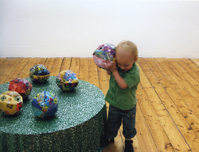

friendship, propaganda, network, songs, stories The Friendship of All Nations investigates a possibility to realize an old Soviet propaganda in a contemporary world through a network of real people and their existing or forming friendships. These individuals will become contributors to the work by submitting a song they consider characteristic to their country. The songs will be re-performed by a foreigner and become part of a mobile sound installation and a website.
Abstract The Friendship of All Nations investigates a possibility to realise an old Soviet propaganda in a contemporary world through a network of real people and their existing or forming friendships. The notion that all nations in Soviet-block countries (expanding to all nations globally if their anti-Soviet governments would be removed) are friends was a fundamental aspect of official Soviet propaganda. It was celebrated through Nations Friendship Days, "Rainbow" festivals and other means such as naming collective farms or universities to reflect the idea. As a teenager at school in Soviet Estonia I learned to sing in Georgian, Latvian, Ukranian, and other languages of Soviet nations. However, I did not know how to say the simplest things in those languages, nor did the teacher. I had no real friends in those republics. Neither had I visited them all. To perform the songs we sometimes dressed up in the national costumes of those other nations. It was an alienating experience as, firstly, we did not understand what we were singing. Secondly, as teenagers we did not care to be friends with strangers 2000 km away about whom we knew nothing. Thirdly, as it was forced upon us we naturally rebelled against the whole idea. In contemporary ex-Soviet Union, to talk about the friendship of 'all' nations is a laughing matter. Even if it is discussed with the contemporary world in mind whilst trying to forget the old propaganda, it is hard to influence people to think tolerantly about those who belong to different cultures and/ or religions. Moreover, certain conflicts within the ex-Soviet-block seemed to be the result of forced friendships. My experience in Western Europe has revealed a different type of ideology for tolerating others. Nation(alism)s seem to be something to be ashamed of because issues of race, gender, and religion are presented as being intrinsic. Here there are similarities between western political correctness and Soviet propaganda. The Friendship of ALL Nations is a networked sound installation, which is realised by establishing real connections with real people in different parts of the world. These people will become contributors/donors to the work: each donating a song of their personal choice, which by their personal opinion is somewhat characteristic to their nation. They are also asked the reason, why that song and those letters/stories become part of the on-line work. In the gallery, several mobile objects played streams of those songs depending on a location of the object in a space. At any time only a selection of songs was played, ideally using the songlist generated by on-line users. In the gallery one could hear individual songs, online users will hear only a mix of songs on selected playlist, but they do have the ability to choose songs from the overall list into the songlist, this way the on-line users have the 'power' to form friendships between nations. Everybody can also become a contributor/donor to the project by sending a song of ones choice for ones country. URLS:
The Friendship of All Nations artists' website |